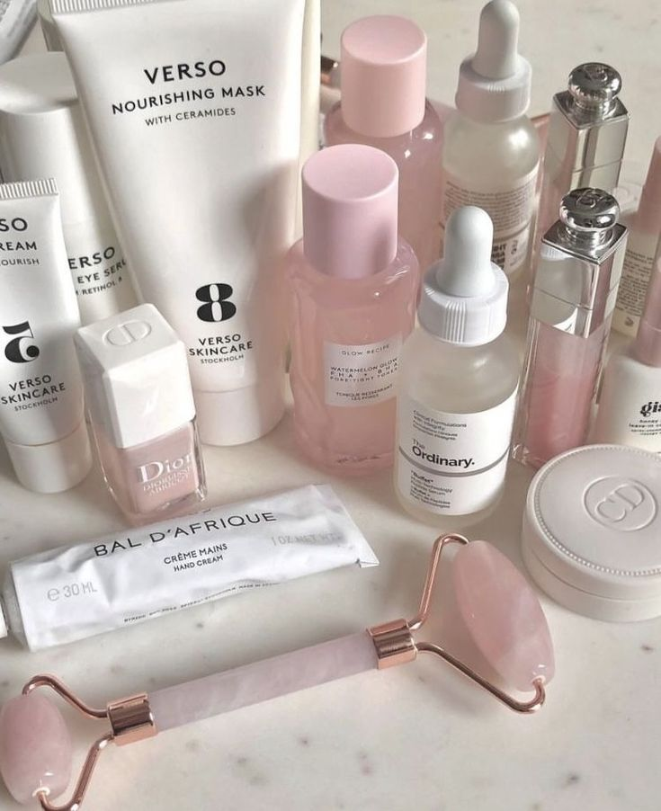

Bienvenido a la Página de Skincare
Descubre cómo el Skincare puede mejorar tu vida. conoce de nuestras características y beneficios a continuación.
Comprar AhoraCaracterísticas
- Elimina impurezas, maquillaje y exceso de grasa.
- Puede incluir limpiadores en gel, espuma, crema o aceite.
- Ayuda a prevenir obstrucciones de poros y brotes de acné.
- Elimina células muertas de la piel para revelar una superficie más suave y luminosa.
- Puede ser física (con partículas exfoliantes) o química (con ácidos como el ácido glicólico o salicílico).
- Promueve la renovación celular y mejora la textura de la piel.
- Ayuda a mantener la piel hidratada y suave.
- Incluye cremas, lociones, geles y aceites.
- Puede tener diferentes fórmulas para pieles secas, mixtas, o grasas.
- Reduce la apariencia de arrugas y líneas finas.
Beneficios
| Beneficio | Descripción |
|---|---|
| Mejora la Hidratación | Mantiene la piel bien hidratada, previniendo la sequedad y la descamación.. |
| Prevención del Envejecimiento Prematuro | Reduce la apariencia de arrugas y líneas finas.. |
| Reducción de Manchas y Desigualdades | Unifica el tono de la piel y reduce la aparición de manchas oscuras y hiperpigmentación. |
| Control del Acné y Reducción de Brotes | Ayuda a prevenir y tratar el acné y los brotes. |
| Mejora de la Textura y Suavidad de la Piel | Deja la piel más suave y con una textura uniforme. |
Testimonios de Clientes
"Este producto ha cambiado mi vida. ¡Lo recomiendo ampliamente!" - Ana
"Excelente calidad y servicio. Definitivamente lo volveré a comprar." - Marcos
Desde que empecé a usar este producto, he notado una mejora significativa en la textura de mi piel. ¡Está más suave y luminosa que nunca!" - Regina
"El tratamiento para el acné ha sido una salvación para mí. Mis brotes han disminuido y mi piel se siente más limpia y fresca." - Sobina
"La hidratación que proporciona es increíble. Mi piel ya no está seca ni tirante. Definitivamente recomiendo este producto a todos." - Georgina
Contacto
Para más información, por favor contacta con nosotros en skinbliss@gmail.com.